import osimport randomimport matplotlib.pyplot as pltimport numpy as npimport numpy.random as rndimport pandas as pdimport kerasfrom keras.callbacks import EarlyStoppingfrom keras.models import Sequential, Modelfrom keras.layers import Input, Dense, Concatenatefrom keras.initializers import Constantfrom sklearn.model_selection import train_test_splitfrom sklearn.compose import make_column_transformerfrom sklearn.preprocessing import StandardScalerfrom sklearn.preprocessing import OrdinalEncoderfrom sklearn.linear_model import LinearRegressionfrom sklearn import set_configset_config(transform_output="pandas")import scipy.stats as statsimport statsmodels.api as sm
Introduction
Why actuaries avoid neural networks
They’re not inherently interpretable, so just we have to look at inputs and outputs from the black box.
Neural network models typically just output a prediction without any sense of its confidence.
Therefore we cannot trust the neural network models, which is a dealbreaker.
Now let’s focus on actuarial problems.
Car insurance
Claim size prediction
👤 Age
🚗 Age
🏎️ Type
25
3
🚙 Sedan
40
5
🚐 SUV
19
1
🏎️ Sports Car
60
10
🚘 Hatchback
\longrightarrow
Cost
💵 $1,200
💵 $2,500
💵 $3,800
💵 $800
What’s wrong? Not enough rows? Not enough columns?
These claim size predictions are not genuine future predictions — the next claim that a 40-year-old with a 5-year-old SUV will probably not be $2,500. That’s only a best guess.
What we are trying to predict is fundamentally unpredictable. Rather than making a 100% confident prediction on a customer’s next claim, the distributional regression model returns a range of possible claim sizes, namely, a distribution of predicted claim sizes for a given customer.
Based on the distribution output, actuaries can obtain risk measures such as expected claim size, variance, Value at Risk, etc.
Distributional regression
Customer 2 = (40, 5, 🚐)
Code
draw_gamma_distribution(2500, 2, COLOURS[1], 1)
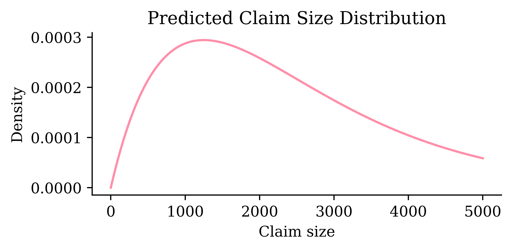
Distributional regression
Customer 3 = (19, 1, 🏎️)
Code
draw_gamma_distribution(3800, 2, COLOURS[2], 2)
Distributional regression
Customer 4 = (60, 10, 🚘)
Code
draw_gamma_distribution(800, 2, COLOURS[3], 3)
Distributional regression
All customers
Code
# Plot all on the same graphplt.figure()for i, (age, car_age, car_type, cost) inenumerate(data): mean = cost shape =2# Example shape parameter for the gamma distribution scale = mean / shape # Scale parameter to achieve the correct mean plt.plot(x, stats.gamma.pdf(x, a=shape, scale=scale), label=f"Customer {i+1}", color=COLOURS[i])plt.title(f"Predicted Claim Size Distribution")plt.xlabel("Claim size")plt.ylabel("Density")plt.legend()
Traditional vs distributional regression
Traditional:
👤
🚗
🏎️
35
12
Sport
→
Model
→
1582.48
Distributional:
👤
🚗
🏎️
35
12
Sport
→
Model
→
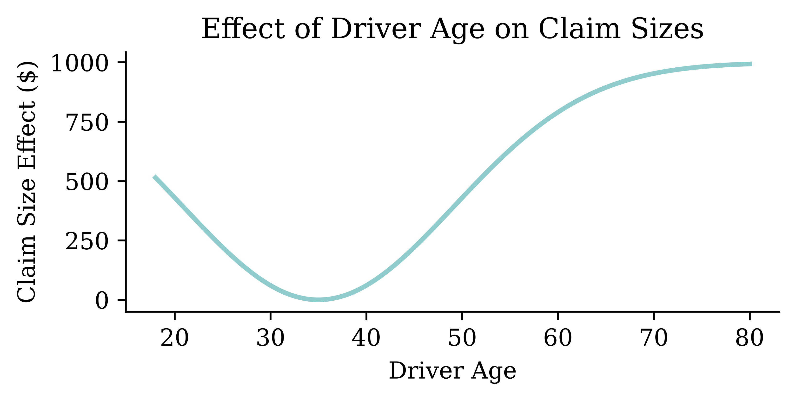
While traditional models give a single prediction (expected value), distributional regression models give a distribution of predictions.
GLMs can be bad at regression because they are restricted to having to take a linear combination of the covariates.
GLMs can be bad at distributional regression because they are restricted to a limited number of probability distributions (Gamma, Poisson, etc.).
Example 1: Non-monotonicity
Code
ages = np.linspace(18, 80, 200) # Driver ages from 18 to 80claim_sizes =1000* (1- np.exp(-((ages -35) /20)**2)) # Create the updated plot# plt.figure(figsize=(8, 6))plt.plot(ages, claim_sizes, linewidth=2)plt.title("Effect of Driver Age on Claim Sizes")plt.xlabel("Driver Age")plt.ylabel("Claim Size Effect ($)")# plt.grid(alpha=0.3)# plt.axvline(35, color='gray', linestyle='--', label='New Middle Age Peak')# plt.legend(fontsize=10)plt.show()
The relationship between the input and output is not always linear. We need to find a way to reflect these non-linear relationships. While you can manually perform feature engineering before placing them in the GLM, this quickly becomes time-consuming. This doesn’t compare to the automated and complex feature engineering that neural networks can do.
GLMs cannot (easily) do this \longrightarrow Use a neural network
Example 2: Multi-modality
Code
x = np.linspace(0, 20*500, 500) # Range restricted to positive real numbers# Adjust the components to ensure a bimodal mixturepdf1 = stats.lognorm.pdf(x, s=0.3, scale=np.exp(1)*500) # Sharper log-normal distributionpdf2 = stats.gamma.pdf(x, a=10, scale=0.8*500) # Narrower gamma distributionmixture_pdf =0.3* pdf1 +0.7* pdf2 # Equal weights to emphasize bimodality# Create the updated plotplt.figure();plt.plot(x, pdf1, label='Parent driving', linestyle='--', color='blue')plt.plot(x, pdf2, label='Kid driving', linestyle='--', color='green')plt.plot(x, mixture_pdf, label='Mixture Distribution', color='red', linewidth=2)plt.title("Claim Size Distribution")plt.legend()plt.xlabel("Claim Size")plt.ylabel("Density")# Turn off the y axis# plt.gca().axes.get_yaxis().set_visible(False)None
The distribution of the output cannot always be easily represented with the limited distributions available for GLMs. For example, if the distribution of the claim size is multi-modal… Gamma/Weibull/Pareto distributions cannot capture this.
NoteMixture distribution
A mixture distribution is, simply put, a mixture of two or more distributions. If f_1(\cdot) is the distribution of claim sizes when a parent is driving and f_2(\cdot) is the distribution when a kid is driving, then the distribution of all claim sizes is:
f(x) = wf_1(x) + (1-w)f_2(x)
The weight parameter w would be chosen based on the expected proportion of the time that a parent/kid is driving.
Key idea
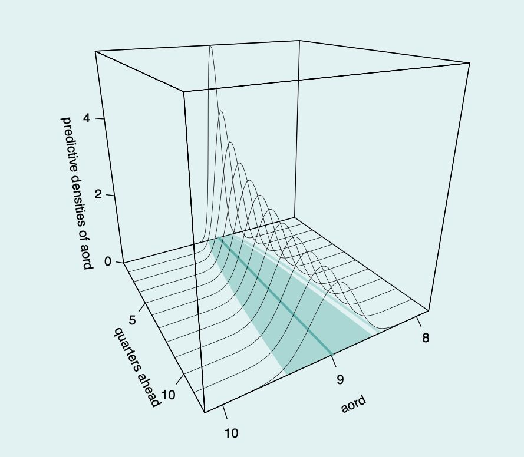
An example of distributional forecasting over the All Ordinaries Index
Earlier machine learning models focused on point estimates.
However, in many applications, we need to understand the distribution of the response variable.
Each prediction becomes a distribution over the possible outcomes
In this example, the distribution of predictions is much more concentrated around the mean for earlier predictions. As we look further into the future, naturally our confidence decreases and the variance of predictions increases.
We will focus on regression not classification
Classifiers already give us a probability, which is a big step up compared to regression models.
However, neural networks’ “probabilities” can be overconfident.
where \hat{y}_i is the predicted value for the ith observation.
Visualising the distribution of each Y
Code
# Generate sample data for linear regressionnp.random.seed(0)X_toy = np.linspace(0, 10, 10)np.random.shuffle(X_toy)beta_0 =2beta_1 =3y_toy = beta_0 + beta_1 * X_toy + np.random.normal(scale=2, size=X_toy.shape)sigma_toy =2# Assuming a standard deviation for the normal distribution# Fit a simple linear regression modelcoefficients = np.polyfit(X_toy, y_toy, 1)predicted_y = np.polyval(coefficients, X_toy)# Plot the data points and the fitted lineplt.scatter(X_toy, y_toy, label='Data Points')plt.plot(X_toy, predicted_y, color='red', label='Fitted Line')# Draw the normal distribution bell curve sideways at each data pointfor i inrange(len(X_toy)): mu = predicted_y[i] y_values = np.linspace(mu -4*sigma_toy, mu +4*sigma_toy, 100) x_values = stats.norm.pdf(y_values, mu, sigma_toy) + X_toy[i] plt.plot(x_values, y_values, color='blue', alpha=0.5)plt.xlabel('$x$')plt.ylabel('$y$')plt.legend()
The error terms \varepsilon \sim \mathcal{N}(0, \sigma^2) are represented by the purple distribution curves along the fitted line.
The probabilistic view
From a probability point of view, we are fitting a distributional model. Since \varepsilon is random, then Y is also partially random.
Y_i \sim \mathcal{N}(\mu_i, \sigma^2)
where \mu_i = \beta_0 + \beta_1 x_{i1} + \ldots + \beta_p x_{ip}, and the \sigma^2 is known.
The \mathcal{N}(\mu, \sigma^2) normal distribution has p.d.f.
A Gamma distribution with mean \mu and dispersion \phi has p.d.f.
f(y; \mu, \phi) = \frac{(\mu \phi)^{-\frac{1}{\phi}}}{\Gamma\left(\frac{1}{\phi}\right)} y^{\frac{1}{\phi} - 1} \mathrm{e}^{-\frac{y}{\mu \phi}}
Our model is Y|\boldsymbol{X}=\boldsymbol{x} is Gamma distributed with a dispersion of \phi and a mean of \mu(\boldsymbol{x}; \boldsymbol{\beta}) = \exp\left(\left\langle \boldsymbol{\beta}, \boldsymbol{x} \right\rangle\right).
The likelihood function is
L(\boldsymbol{\beta}) = \prod_{i=1}^n \frac{(\mu_i \phi)^{-\frac{1}{\phi}}}{\Gamma\left(\frac{1}{\phi}\right)} y_i^{\frac{1}{\phi} - 1} \exp\left(-\frac{y_i}{\mu_i \phi}\right)
Since \phi is a nuisance parameter
\text{NLL}(\boldsymbol{\beta})
= \sum_{i=1}^n \left[ \frac{1}{\phi} \log(\mu_i) + \frac{y_i}{\mu_i \phi} \right] + \text{const}
\propto \sum_{i=1}^n \left[ \log(\mu_i) + \frac{y_i}{\mu_i} \right].
Note
As \log(\mu_i) = \log(y_i) - \log(y_i / \mu_i), we could write an alternative version
\text{NLL}(\boldsymbol{\beta})
\propto \sum_{i=1}^n \left[ \log(y_i) - \log\Bigl(\frac{y_i}{\mu_i}\Bigr) + \frac{y_i}{\mu_i} \right]
\propto \sum_{i=1}^n \left[ \frac{y_i}{\mu_i} - \log\Bigl(\frac{y_i}{\mu_i}\Bigr) \right].
All of these examples show the overlap between the world of probability and the world of statistical machine learning. They are both trying to solve the same problem, and in fact use the same methods to solve those problems.
Why do actuaries use GLMs?
GLMs are interpretable.
GLMs are flexible (can handle different types of response variables).
We get the full distribution of the response variable, not just the mean.
This last point is particularly important for analysing worst-case scenarios.
Stochastic Forecasts
Stock price forecasting
Code
def lagged_timeseries(df, target, window=30): lagged = pd.DataFrame()for i inrange(window, 0, -1): lagged[f"T-{i}"] = df[target].shift(i) lagged["T"] = df[target].valuesreturn laggedstocks = pd.read_csv("data/aus_fin_stocks.csv")stocks["Date"] = pd.to_datetime(stocks["Date"])stocks = stocks.set_index("Date")_ = stocks.pop("ASX200")stock = stocks[["CBA"]]stock = stock.ffill()# Compute daily log returnsstock_log = np.log(stock / stock.shift(1)).dropna()# Helper functions for converting log returns to pricesdef log_to_price(log_returns, initial_price): cumulative_log_returns = log_returns.cumsum()return initial_price * np.exp(cumulative_log_returns)def get_last_price(stock_df, cutoff_date): last_known_date = stock_df.loc[:cutoff_date].index[-1]return stock_df.loc[last_known_date, "CBA"]# Create lagged features from log returnsdf_lags = lagged_timeseries(stock_log, "CBA", 40)# Split the data in timeX_train = df_lags.loc[:"2024"]X_test = df_lags.loc["2025":]# Remove any with NAs and split into X and yX_train = X_train.dropna()X_test = X_test.dropna()y_train = X_train.pop("T")y_test = X_test.pop("T")lr = LinearRegression()lr.fit(X_train, y_train);
Remember the auto-regressive forecast: based on the stock’s log return history up to yesterday, predict today’s stock price.
What about tomorrow’s stock price? \longrightarrow Assume today’s prediction actually occurred, and use that to predict tomorrow’s price.
This time, add noise to the forecasts.
def noisy_autoregressive_forecast(model, X_val, sigma, suppress=False):""" Generate a multi-step forecast using the given model. """ multi_step = pd.Series(index=X_val.index, name="Multi Step")# Initialize the input data for forecasting input_data = X_val.iloc[0].values.reshape(1, -1)for i inrange(len(multi_step)):# Ensure input_data has the correct feature names input_df = pd.DataFrame(input_data, columns=X_val.columns)if suppress: next_value = model.predict(input_df, verbose=0)else: next_value = model.predict(input_df)1 next_value += np.random.normal(0, sigma) multi_step.iloc[i] = next_value# Append that prediction to the input for the next forecastif i +1<len(multi_step): input_data = np.append(input_data[:, 1:], next_value).reshape(1, -1)return multi_step
1
Add random normal noise with a specified variance to the prediction.
In this model, we assume that: \hat y_{t+1} \sim \mathcal N (\mu_i, \sigma^2)
This is equivalent to \hat y_{t+1} = \mu_i + \varepsilon, \quad \varepsilon \sim \mathcal{N}(0,\sigma^2)
This plot contains 300 simulated forecasts of the stock price over time. We see that the variance in the predictions increases with time. This makes sense as we are accumulating the random components ove time.
95% “prediction intervals”
# Calculate quantiles for the forecastslower_quantile = noisy_forecasts.quantile(0.025, axis=1)upper_quantile = noisy_forecasts.quantile(0.975, axis=1)mean_forecast = noisy_forecasts.mean(axis=1)
Code
# Plot the mean forecastplt.figure(figsize=(8, 3))plt.plot(stock.loc["2024-12":"2025"].index, stock.loc["2024-12":"2025"]["CBA"], label="CBA")plt.plot(mean_forecast, label="Mean")# Plot the quantile-based shaded areaplt.fill_between(mean_forecast.index, lower_quantile, upper_quantile, color="grey", alpha=0.2)# Plot settingsplt.axvline(pd.Timestamp("2025-01-01"), color="black", linestyle="--")plt.legend(loc="center left", bbox_to_anchor=(1, 0.5))plt.xlabel("Date")plt.ylabel("Stock Price")plt.tight_layout();
The model predicts with 95% confidence that the stock price in 6 months time will be somewhere between $120 and $200.
/Users/z3535837/Library/CloudStorage/Dropbox/Lecturing/ACTL3143/DeepLearningForActuaries/.venv/lib/python3.14/site-packages/scipy/stats/_axis_nan_policy.py:592: UserWarning: scipy.stats.shapiro: For N > 5000, computed p-value may not be accurate. Current N is 6582.
res = hypotest_fun_out(*samples, **kwds)
How do we choose the value for sigma? Here, sigma was chosen to be the standard deviation of the residuals of the original AR (non-noisy) forecast model.
The plot above shows the histogram of the standardised residuals and the standard normal curve. Based on this plot and the Shapiro test, it appears that the residuals are not normally distributed.
Q-Q plot and P-P plot
Code
sm.qqplot(residuals, line="45");
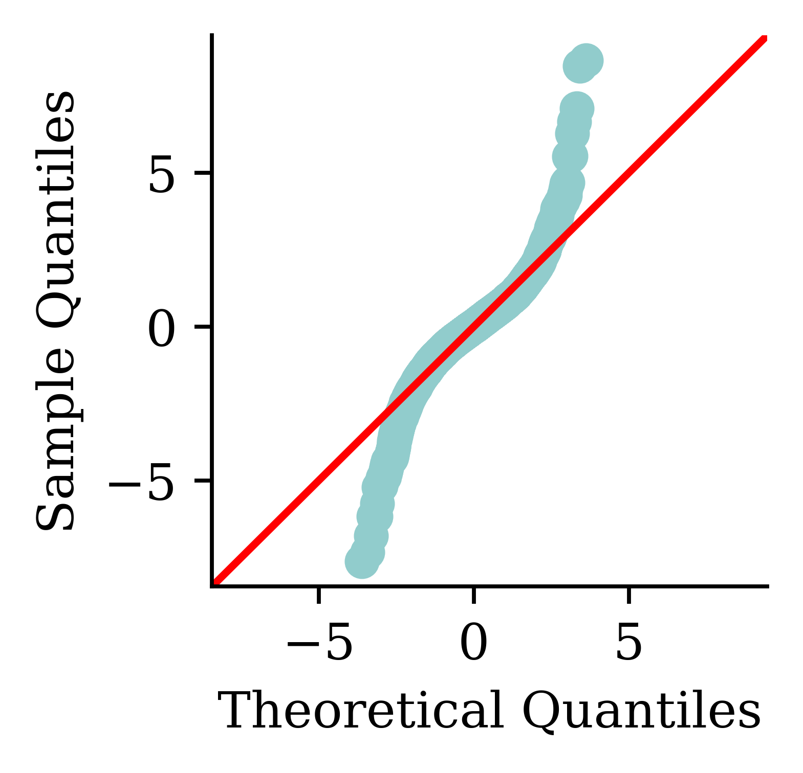
Code
sm.ProbPlot(residuals).ppplot(line="45");
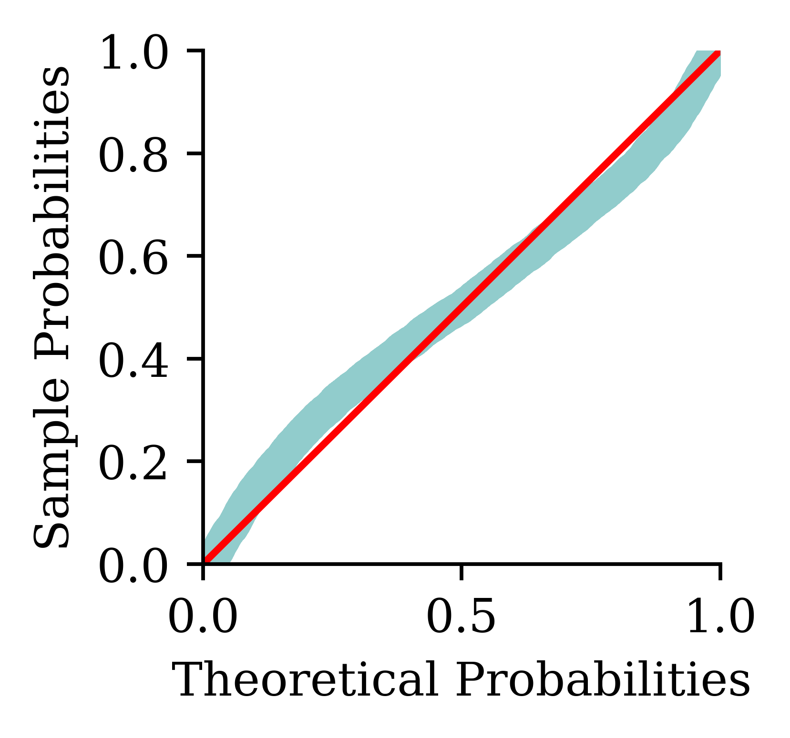
The distribution of the residuals has heavier tails than the standard normal distribution.
The variance of the standardised residuals changes over time. Higher variance occurs during significantly volatile economic periods (e.g. the global financial crisis in 2007-2009 and COVID).
/Users/z3535837/Library/CloudStorage/Dropbox/Lecturing/ACTL3143/DeepLearningForActuaries/.venv/lib/python3.14/site-packages/scipy/stats/_axis_nan_policy.py:592: UserWarning: scipy.stats.shapiro: For N > 5000, computed p-value may not be accurate. Current N is 5565.
res = hypotest_fun_out(*samples, **kwds)
While the distribution looks closer, it is still significantly farr off of normally distributed. At this point, we should question the validity of the normal distribution assumption we made.
GLMs and Neural Networks
French motor claim sizes
As freMTPL2sev just has Policy ID & severity, we merge with freMTPL2freq which has Policy ID, # Claims, and other covariates.
sev = pd.read_csv('data/freMTPL2sev.csv')cov = pd.read_csv('data/freMTPL2freq.csv').drop(columns=['ClaimNb'])1sev = pd.merge(sev, cov, on='IDpol', how='left').drop(columns=["IDpol"]).dropna()sev
1
Merges the severity dataframe sev with the covariates in cov by matching the IDpol column. Assigning how='left' ensures that all rows from the left dataset sev is considered, and only the matching columns from cov are selected. Also drops the policy ID column and any rows with missing values.
Apply ordinal encoding to Area and VehGas variables, and apply standard scaling to all remaining numerical variables. To simplify things, VehBrand and Region variables are dropped from the dataframe.
3
Fit the column transformer to the train set and apply it
4
Apply the column trainsformer to the test set
Plotting the empirical distribution of the target variable ClaimAmount helps us to get an understanding of the inherent variability associated with the data. The data appears to be multi-modal.
Doesn’t prove that Y | \boldsymbol{X} = \boldsymbol{x} is multimodal
Code
# Make some example where the distribution is multimodal because of a binary covariate which separates the means of the two distributionsnp.random.seed(1)fig, axes = plt.subplots(3, 1, figsize=(5.0, 3.0), sharex=True)x_min =0x_max = y_train.max()x_grid = np.linspace(x_min, x_max, 100)# Simulate some data from an exponential distribution which has Pr(X < 1000) = 0.9n =100p =0.1lambda_ =-np.log(p) /1000mu =1/ lambda_y_1 = np.random.exponential(scale=mu, size=n)# Pick a truncated normal distribution with a mean of 1100 and std of 250 (truncated to be positive)mu =1100sigma =100y_2 = stats.truncnorm.rvs((0- mu) / sigma, (np.inf - mu) / sigma, loc=mu, scale=sigma, size=n)# Combine y_1 and y_2 for the final histogramy = np.concatenate([y_1, y_2])# Determine common binsbins = np.histogram_bin_edges(y, bins=30)# Plot each normal distribution with different means verticallyfor i, ax inenumerate(axes):if i ==0: ax.hist(y_1, bins=bins, density=True, color=COLOURS[i+1]) ax.set_ylabel(f'$f(y | x = 1)$')elif i ==1: ax.hist(y_2, bins=bins, density=True, color=COLOURS[i+1]) ax.set_ylabel(f'$f(y | x = 2)$')else: ax.hist(y, bins=bins, density=True) ax.set_ylabel(f'$f(y)$')plt.tight_layout();
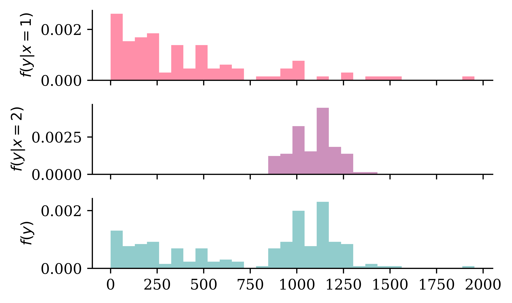
While the distribution of claim size from entire dataset appears to be multimodal, that does not mean that the distribution of claim size of a particular type of customer is multimodal. Two different categories of customers can have different unimodal distributions, and the combination (“mixture”) of the two categories would be multimodal.
The following section illustrates how embedding a GLM in a neural network architecture can help us quantify the uncertainty relating to the predictions coming from the neural network. The idea is to first fit a GLM, and use the predictions from the GLM and predictions from the neural network part to define a custom loss function. This embedding presents an opportunity to compute the dispersion parameter \phi_{\text{CANN}} for the neural network.
The idea of GLM is to find a linear combination of independent variables \boldsymbol{x} and coefficients \boldsymbol{\beta}, apply a non-linear transformation (g^{-1}) to that linear combination and set it equal to conditional mean of the response variable Y given an instance \boldsymbol{x}. The non-linear transformation provides added flexibility.
Then, it estimates the conditional mean of Y given a new instance \boldsymbol{x}=(1, x_1, x_2, x_3) as follows:
\mathbb{E}[Y|\boldsymbol{X}=\boldsymbol{x}] = g^{-1}(\langle \boldsymbol{\beta}, \boldsymbol{x}\rangle) = \exp\big(\beta_0 + \beta_1 x_1 + \beta_2 x_2 + \beta_3 x_3 \big).
A GLM can model any other exponential family distribution using an appropriate link function g.
Gamma GLM loss
If Y|\boldsymbol{X}=\boldsymbol{x} is a Gamma r.v. with mean \mu(\boldsymbol{x}; \boldsymbol{\beta}) and dispersion parameter \phi, we can minimise the negative log-likelihood (NLL)
\text{NLL} \propto \sum_{i=1}^{n}\log \mu (\boldsymbol{x}_i; \boldsymbol{\beta})+\frac{y_i}{\mu (\boldsymbol{x}_i; \boldsymbol{\beta})} + \text{const},
i.e., we ignore the dispersion parameter \phi while estimating the regression coefficients.
Fitting Steps
Step 1. Use the advanced second derivative iterative method to find the regression coefficients:
\boldsymbol{\beta}^* = \underset{\boldsymbol{\beta}}{\text{arg\,min}} \ \sum_{i=1}^{n}\log \mu (\boldsymbol{x}_i; \boldsymbol{\beta})+\frac{y_i}{\mu (\boldsymbol{x}_i; \boldsymbol{\beta})}
(Here, p is the number of coefficients in the model. If this p doesn’t include the intercept, then the scaling should be \frac{1}{n-(p+1)}.)
Code: Gamma GLM
In Python, we can fit a Gamma GLM as follows:
import statsmodels.api as sm# Add a column of ones to include an intercept in the modelX_train_design = sm.add_constant(X_train)# Create a Gamma GLM with a log link functiongamma_glm = sm.GLM(y_train, X_train_design, family=sm.families.Gamma(sm.families.links.Log()))# Fit the modelgamma_glm = gamma_glm.fit()
The above example of fitting a Gamma distribution assumes a constant dispersion, meaning that, the dispersion of claim amount is constant for all policyholders. If we believe that the constant dispersion assumption is quite strong, we can use a double GLM model. Fitting a GLM is the traditional way of modelling a claim amount.
ANN can feed into a GLM
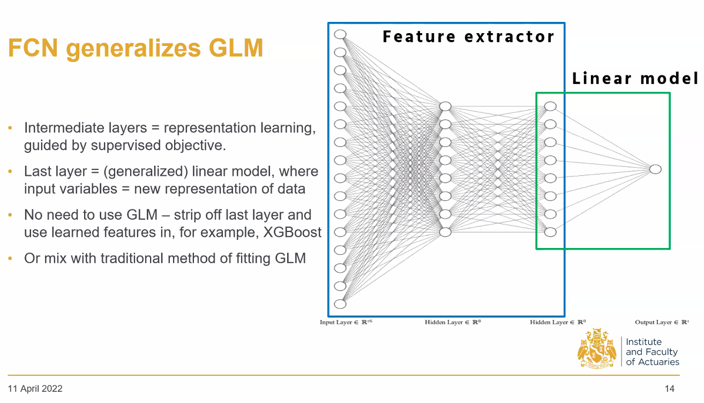
Combining GLM & ANN.
By zooming in on the last hidden layer of the NN and the output neuron, we are essentially looking at a GLM. The hidden layer of neurons would be the input “covariates”. The output neuron before applying the activation function is \hat\mu, which is a linear combination of the covariates using the fitted weights and bias. The activation function (inverse link function) converts \hat \mu into \hat y. The only difference is that the input neurons are not the raw data values; they are the processed versions of the data. Then we can consider the first part of the NN to simply be the feature engineering process.
Combined Actuarial Neural Network
CANN
The Combined Actuarial Neural Network is an actuarial neural network architecture proposed by Schelldorfer and Wüthrich (2019). We summarise the CANN approach as follows:
Find coefficients \boldsymbol{\beta} of the GLM with a link function g(\cdot).
Find weights \boldsymbol{w} = (\boldsymbol{w}^{(1)}, \dots, \boldsymbol{w}^{(K+1)}) of a neural network s:\mathbb{R}^{p}\to\mathbb{R}.
The neural network is shifting the predictions given by the GLM.
Shifting the predicted distributions
Code
# Ensure reproducibilityrandom.seed(1)# Make a 4x1 grid of plotsfig, axes = plt.subplots(4, 1, figsize=(5.0, 3.0), sharex=True)# Define the x-axisx_min =0x_max =5000x_grid = np.linspace(x_min, x_max, 100)# Plot a few Gamma distribution pdfs with different means.# Then plot Gamma distributions with shifted means and the same dispersion parameter.glm_means = [1000, 3000, 2000, 4000]cann_means = [1500, 1400, 3000, 5000]for i, ax inenumerate(axes): ax.plot(x_grid, stats.gamma.pdf(x_grid, a=2, scale=glm_means[i]/2), label=f'GLM') ax.plot(x_grid, stats.gamma.pdf(x_grid, a=2, scale=cann_means[i]/2), label=f'CANN') ax.set_ylabel(f'$f(y | x_{i+1})$')if i ==0: ax.legend(["GLM", "CANN"], loc="upper right", ncol=2)
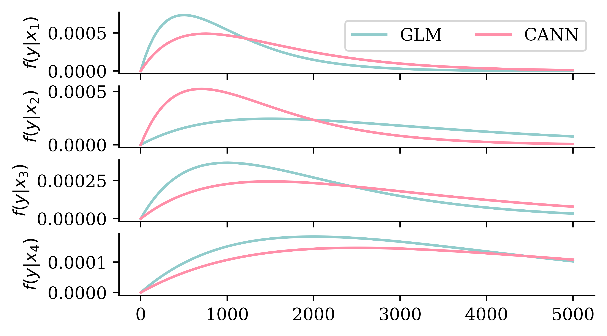
While the assumed distribution of the target variable remains the same the neural network shifts the parameters of the distribution (e.g. mean and variance) to give a new shape under the CANN.
Architecture
Building CANNs is relatively straightforward.
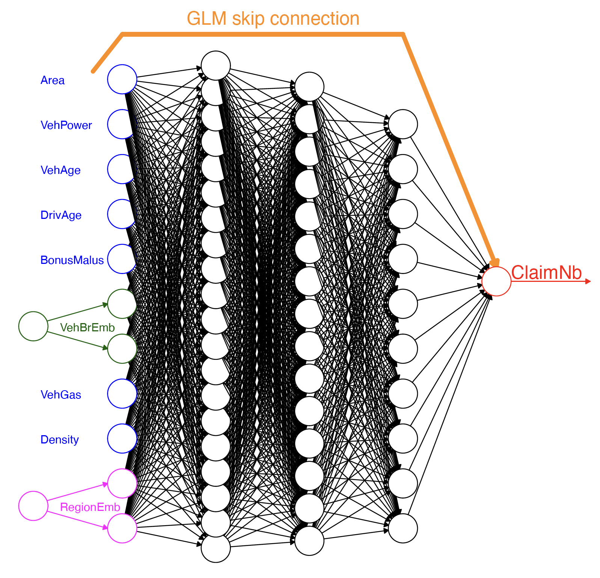
The CANN architecture.
One copy of the variables is processed through many dense hidden layers (NN component), while a second copy skips the layers and gets combined directly into the generation of the output neuron (GLM component).
Fit a GLM directly to the train data, and extract the fitted coefficients.
2
Add a Dense layer with just one neuron, to store the model output (before inverse link function) from the GLM. The linear activation is used to make sure that the output is a linear combination of inputs. The weights are set to be non-trainable, hence the values obtained during GLM fitting will not change during the neural network training process. kernel_initializer=Constant(glm_weights) and bias_initializer=Constant(glm_bias) ensures that weights are initialized with the optimal values estimated from GLM fit.
3
Specify the neural network layers (1 dense hidden layer and the output neuron).
4
Add the GLM contribution to the neural network output and exponentiate to get the mean estimate.
Since this CANN predicts Gamma distributions, we use the Gamma NLL loss function.
One intuitive way to capture uncertainty using neural networks would be to estimate the parameters of the target distribution, instead of predicting the value it self. For example, suppose we want to predict y coming from a Gaussian distribution. Most common method would be to predict (\hat{y}) directly using a single neuron at the output layer. Another possible way would be to estimate the parameters (\mu and \sigma) of the y distribution using 2 neurons at the output layer. Estimating parameters of the distribution instead of point estimates for y can help us get an idea about the uncertainty. However, assuming distributional properties at times could be too restrictive. For example, it is possible that the actual distribution of y values is bimodal or multimodal. In such situations, assuming a mixture distribution is more intuitive.
Given a finite set of resulting random variables (Y_1, \ldots, Y_{K}), one can generate a multinomial random variable Y\sim \text{Multinomial}(1, \boldsymbol{\pi}). Meanwhile, Y can be regarded as a mixture of Y_1, \ldots, Y_{K}, i.e.,
Y = \begin{cases}
Y_1 & \text{w.p. } \pi_1, \\
\vdots & \vdots\\
Y_K & \text{w.p. } \pi_K, \\
\end{cases}
where we define a finite set of weights \boldsymbol{\pi}=(\pi_{1} \ldots, \pi_{K}) such that \pi_k \ge 0 for k \in \{1, \ldots, K\} and \sum_{k=1}^{K}\pi_k=1.
Mixture Distribution
Let f_k and F_k be the p.d.f. and the c.d.f of Y_k|\boldsymbol{X} for all k \in \{1, \ldots, K\}.
The random variable Y|\boldsymbol{X}, which mixes Y_k|\boldsymbol{X}’s with weights \pi_k’s, has the density function
f_{Y|\boldsymbol{X}}(y|\boldsymbol{x}) = \sum_{k=1}^{K}\pi_k(\boldsymbol{x}) f_{k}(y|\boldsymbol{x}),
and the cumulative distribution function
F_{Y|\boldsymbol{X}}(y|\boldsymbol{x}) = \sum_{k=1}^{K}\pi_k(\boldsymbol{x}) F_{k}(y|\boldsymbol{x}).
Mixture Density Network
A mixture density network (MDN) \text{MDN}(\boldsymbol{x}) outputs each distribution component’s mixing weights and parameters of Y given the input features \boldsymbol{x}, i.e.,
\text{MDN}(\boldsymbol{x})=(\boldsymbol{\pi}(\boldsymbol{x};\boldsymbol{w}^*), \boldsymbol{\theta}(\boldsymbol{x};\boldsymbol{w}^*)),
where \boldsymbol{w}^* is the networks’ weights found by minimising the following negative log-likelihood loss function, i.e.,
\boldsymbol{w}^* = \underset{\boldsymbol{w}}{\text{arg\,min}} \
\mathcal{L}(\mathcal{D}, \boldsymbol{w})= - \sum_{i=1}^{n} \log f_{Y|\boldsymbol{X}}(y_i|\boldsymbol{x}, \boldsymbol{w}),
where \mathcal{D}=\{(\boldsymbol{x}_i,y_i)\}_{i=1}^{n} is the training dataset.
Mixture Density Network
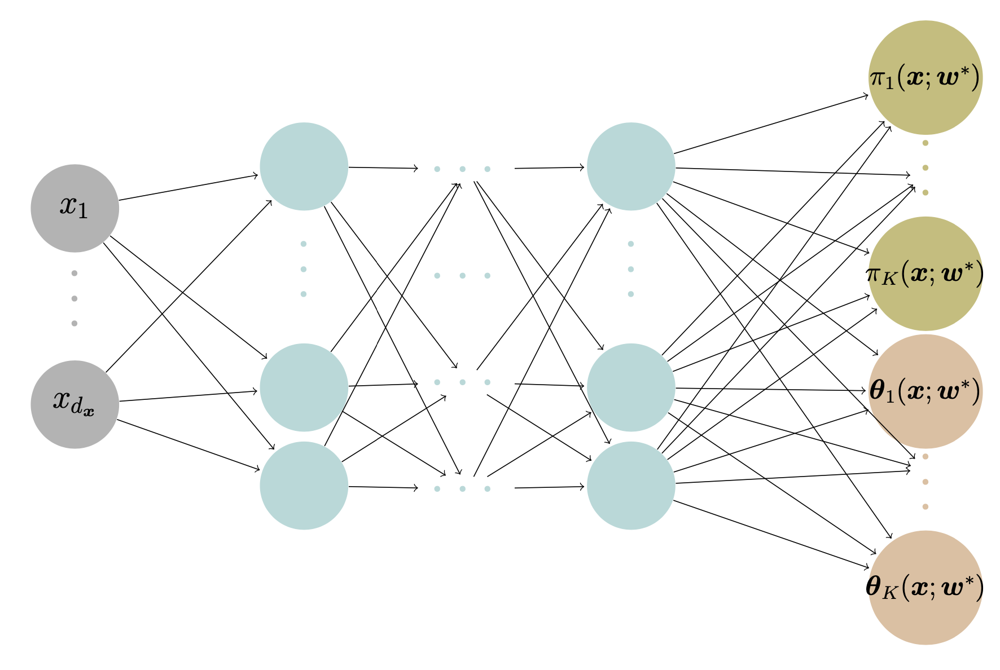
An MDN that outputs the parameters for a K component mixture distribution. \boldsymbol{\theta}_k(\boldsymbol{x}; \boldsymbol{w}^*)= (\theta_{k,1}(\boldsymbol{x}; \boldsymbol{w}^*), \ldots, \theta_{k,|\boldsymbol{\theta}_k|}(\boldsymbol{x}; \boldsymbol{w}^*)) consists of the parameter estimates for the kth mixture component.
Model Specification
Suppose there are two types of claims:
Type I: Y_1|\boldsymbol{X}=\boldsymbol{x}\sim \text{Gamma}(\alpha_1(\boldsymbol{x}), \beta_1(\boldsymbol{x})) and,
Type II: Y_2|\boldsymbol{X}=\boldsymbol{x}\sim \text{Gamma}(\alpha_2(\boldsymbol{x}), \beta_2(\boldsymbol{x})).
The density of the actual claim amount Y|\boldsymbol{X}=\boldsymbol{x} follows
\begin{align*}
f_{Y|\boldsymbol{X}}(y|\boldsymbol{x})
&= \pi_1(\boldsymbol{x})\cdot \frac{\beta_1(\boldsymbol{x})^{\alpha_1(\boldsymbol{x})}}{\Gamma(\alpha_1(\boldsymbol{x}))}\mathrm{e}^{-\beta_1(\boldsymbol{x})y}y^{\alpha_1(\boldsymbol{x})-1} \\
&\quad + (1-\pi_1(\boldsymbol{x}))\cdot \frac{\beta_2(\boldsymbol{x})^{\alpha_2(\boldsymbol{x})}}{\Gamma(\alpha_2(\boldsymbol{x}))}\mathrm{e}^{-\beta_2(\boldsymbol{x})y}y^{\alpha_2(\boldsymbol{x})-1}.
\end{align*}
where \pi_1(\boldsymbol{x}) is the probability of a Type I claim given \boldsymbol{x}.
Output
The aim is to find the optimum weights
\boldsymbol{w}^* = \underset{w}{\text{arg\,min}} \ \mathcal{L}(\mathcal{D}, \boldsymbol{w})
for the Gamma mixture density network \text{MDN}(\boldsymbol{x}) that outputs the mixing weights, shapes and scales of Y given the input features \boldsymbol{x}, i.e.,
\begin{align*}
\text{MDN}(\boldsymbol{x})
= ( &\pi_1(\boldsymbol{x}; \boldsymbol{w}^*),
\pi_2(\boldsymbol{x}; \boldsymbol{w}^*), \\
&\alpha_1(\boldsymbol{x}; \boldsymbol{w}^*),
\alpha_2(\boldsymbol{x}; \boldsymbol{w}^*), \\
&\beta_1(\boldsymbol{x}; \boldsymbol{w}^*),
\beta_2(\boldsymbol{x}; \boldsymbol{w}^*)
).
\end{align*}
Architecture
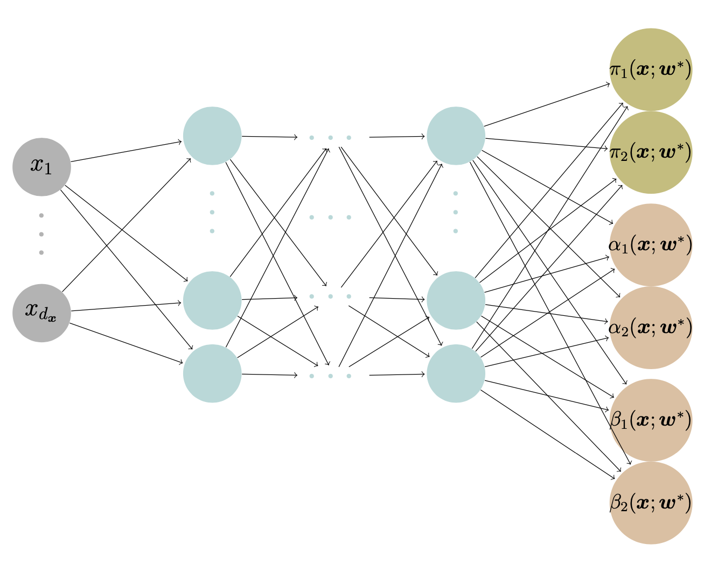
We demonstrate the structure of a Gamma MDN that outputs the parameters for a Gamma mixture with two components.
Code: Architecture
The following code implements the gamma MDN from the previous slide.
Fits the model with a manual training loop, evaluating on a validation split each epoch
3
Early stopping with patience of 10 epochs, restoring the best weights
Metrics for Distributional Regression
How do we assess the distributional regression model?
Proper Scoring Rules
Proper scoring rules provide a summary measure for the performance of the probabilistic predictions. They are useful in comparing performances across models.
Definition
A scoring rule is the equivalent of a loss function for distributional regression.
Denote S(F, y) to be the score given to the forecasted distribution F and an observation y \in \mathbb{R}.
Definition
A scoring rule is called proper if
\mathbb{E}_{Y \sim Q} S(Q, Y) \le \mathbb{E}_{Y \sim Q} S(F, Y)
for all F and Q distributions.
It is called strictly proper if equality holds only if F = Q.
Note
Y \sim Q: the true distribution of Y is Q.
Example Proper Scoring Rules
Logarithmic Score (NLL)
The logarithmic score is defined as
\mathrm{LogS}(f, y) = - \log f(y),
where f is the predictive density.
Continuous Ranked Probability Score (CRPS)
The continuous ranked probability score is defined as
\mathrm{crps}(F, y) = \int_{-\infty}^{\infty} (F(t) - {1}_{t\ge y})^2 \ \mathrm{d}t,
where F is the predicted c.d.f.
Likelihoods
Code
y_pred = np.polyval(coefficients, X_toy[:4])y_pred[2] *=1.1sigma_preds = sigma_toy * np.array([1.0, 3.0, 0.5, 0.5])fig, axes = plt.subplots(1, 4, figsize=(5.0, 3.0), sharey=True)x_min = y_pred[:4].min() -4*sigma_toyx_max = y_pred[:4].max() +4*sigma_toyx_grid = np.linspace(x_min, x_max, 100)# Plot each normal distribution with different means verticallyfor i, ax inenumerate(axes): y_grid = stats.norm.pdf(x_grid, y_pred[i], sigma_preds[i]) ax.plot(x_grid, y_grid) ax.plot([y_toy[i], y_toy[i]], [0, stats.norm.pdf(y_toy[i], y_pred[i], sigma_preds[i])], color='red', linestyle='--') ax.scatter([y_toy[i]], [stats.norm.pdf(y_toy[i], y_pred[i], sigma_preds[i])], color='red', zorder=10) ax.set_title(f'$f(y ; \\boldsymbol{{x}}_{{{i+1}}})$') ax.set_xticks([y_pred[i]], labels=[r'$\mu_{'+str(i+1) +r'}$'])# ax.set_ylim(0, 0.25)# Turn off the y axes ax.yaxis.set_visible(False)plt.tight_layout();
In this example the observed value is in red and the green line is the predicted distribution. For overconfiedent predictions (low variance), we can either be rewarded greatly if we are right (\mu_4). We can also be penalised heavily if our confident prediction is wrong (\mu_3). For underconfident predictions, the reward does not change significantly between predictions, and we are penalised for not being confident enough.
When fitting the model by trying to maximise the likelihood, you want to balance the trade-off between making an accurate prediction and making a confident prediction.
Code: NLL
def gamma_nll(mean, dispersion, y):# Calculate shape and scale parameters from mean and dispersion shape =1/ dispersion; scale = mean * dispersion# Create a gamma distribution object gamma_dist = stats.gamma(a=shape, scale=scale)return-np.mean(gamma_dist.logpdf(y))# GLMX_test_design = sm.add_constant(X_test)mus = gamma_glm.predict(X_test_design)nll_glm = gamma_nll(mus, phi_glm, y_test)# CANNmus = cann.predict(X_test, verbose=0)nll_cann = gamma_nll(mus, phi_cann, y_test)# MDNgamma_mdn.eval()with torch.no_grad(): X_test_t = torch.tensor(X_test.values, dtype=torch.float32) y_test_t = torch.tensor(y_test.values, dtype=torch.float32) pis, alphas, betas = gamma_mdn(X_test_t) nll_mdn = gamma_mixture_nll(pis, alphas, betas, y_test_t).item()
The above results show that MDN provides the lowest value for the Logarithmic Score (NLL). Low values for NLL indicate better fits. One possible reason for the better performance of the MDN model (compared to the Gamma model) is the added flexibility from multiple modelling components. The multiple modelling components in the MDN model, together, can capture the inherent variation in the data better.
Aleatoric and Epistemic Uncertainty
Uncertainty in deep learning refers to the level of doubt one would have about the predictions made by an AI-driven algorithm. Identifying and quantifying different sources of uncertainty that could exist in AI-driven algorithms is therefore important to ensure a credible application.
Categories of uncertainty
There are two major categories of uncertainty in statistical or machine learning:
Aleatoric uncertainty: the inherent variability associated with the data generating process.
Epistemic uncertainty: the lack of knowledge, limited data information, parameter errors and model errors.
Sources of uncertainty
There are many sources of uncertainty in statistical or machine learning models.
Parameter error stems primarily due to lack of data.
Model error stems from assuming wrong distributional properties of the data.
Data uncertainty arises due to the lack of confidence we may have about the quality of the collected data. Noisy data, inconsistent data, data with missing values or data with missing important variables can result in data uncertainty.
If you decide to predict the claim amount of an individual using a deep learning model, which source(s) of uncertainty are you dealing with?
The inherent variability of the data-generating process \rightarrow aleatoric uncertainty.
Data uncertainty \rightarrow epistemic uncertainty.
Traditional regularisation
Regularisation is performed when fitting model parameters to avoid overfitting to the train data.
Say all the m weights (excluding biases) are in the vector \boldsymbol{\theta}. If we change the loss function to
\text{Loss}_{1:n}
= \frac{1}{n} \sum_{i=1}^n \text{Loss}_i
+ \lambda \sum_{j=1}^{m} \left| \theta_j \right|
this would be using L^1 regularisation. A loss like
This code defines functions that specify and fit a NN under the two regularisation methods.
Weights before & after L^2
model = l2_model(0.0)weights = model.layers[0].get_weights()[0].flatten()print(f"Number of weights almost 0: {np.sum(np.abs(weights) <1e-5)}")plt.hist(weights, bins=100);
Number of weights almost 0: 0
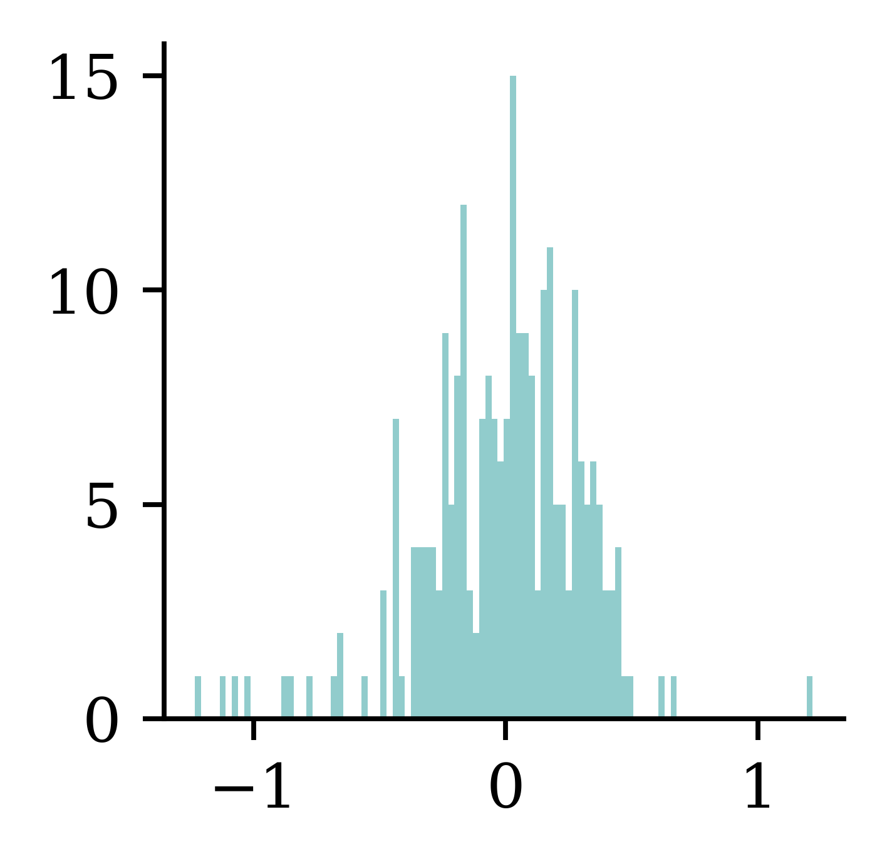
model = l2_model(1.0)weights = model.layers[0].get_weights()[0].flatten()print(f"Number of weights almost 0: {np.sum(np.abs(weights) <1e-5)}")plt.hist(weights, bins=100);
Number of weights almost 0: 0
May of the weights are much closer to 0 (but never exactly 0).
Weights before & after L^1
model = l1_model(0.0)weights = model.layers[0].get_weights()[0].flatten()print(f"Number of weights almost 0: {np.sum(np.abs(weights) <1e-5)}")plt.hist(weights, bins=100);
Number of weights almost 0: 0
model = l1_model(1.0)weights = model.layers[0].get_weights()[0].flatten()print(f"Number of weights almost 0: {np.sum(np.abs(weights) <1e-5)}")plt.hist(weights, bins=100);
Number of weights almost 0: 16
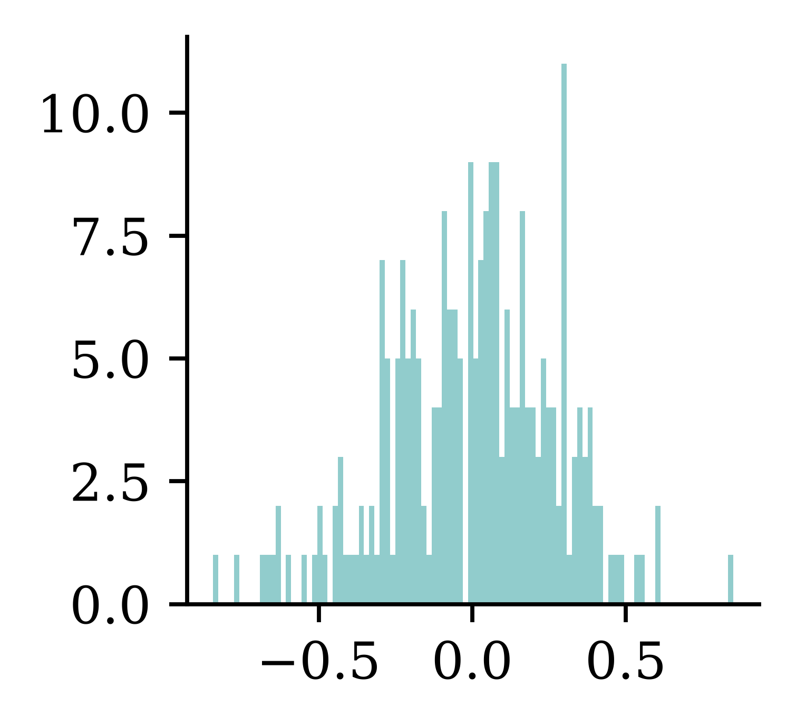
Many of the weights have been reduced to exactly 0. This breaks the connections between neurons inside the NN.
Early-stopping regularisation
A form of regularisation that we’ve already been doing is early-stopping. The model stops learning when the validation loss is minimised, clearly solving the issue of over-fitting the model to the train data.
A very different way to regularize iterative learning algorithms such as gradient descent is to stop training as soon as the validation error reaches a minimum. This is called early stopping… It is such a simple and efficient regularization technique that Geoffrey Hinton called it a “beautiful free lunch”.
Alternatively, you can try building a model with slightly more layers and neurons than you actually need, then use early stopping and other regularization techniques to prevent it from overfitting too much. Vincent Vanhoucke, a scientist at Google, has dubbed this the “stretch pants” approach: instead of wasting time looking for pants that perfectly match your size, just use large stretch pants that will shrink down to the right size.
Dropout
Dropout
Dropout is one of the most popular methods for reducing the risk of overfitting. Dropout is the act of randomly selecting a proportion of neurons and deactivating them during each training iteration. It is a regularization technique that aims to reduce overfitting and improve the generalization ability of the model.
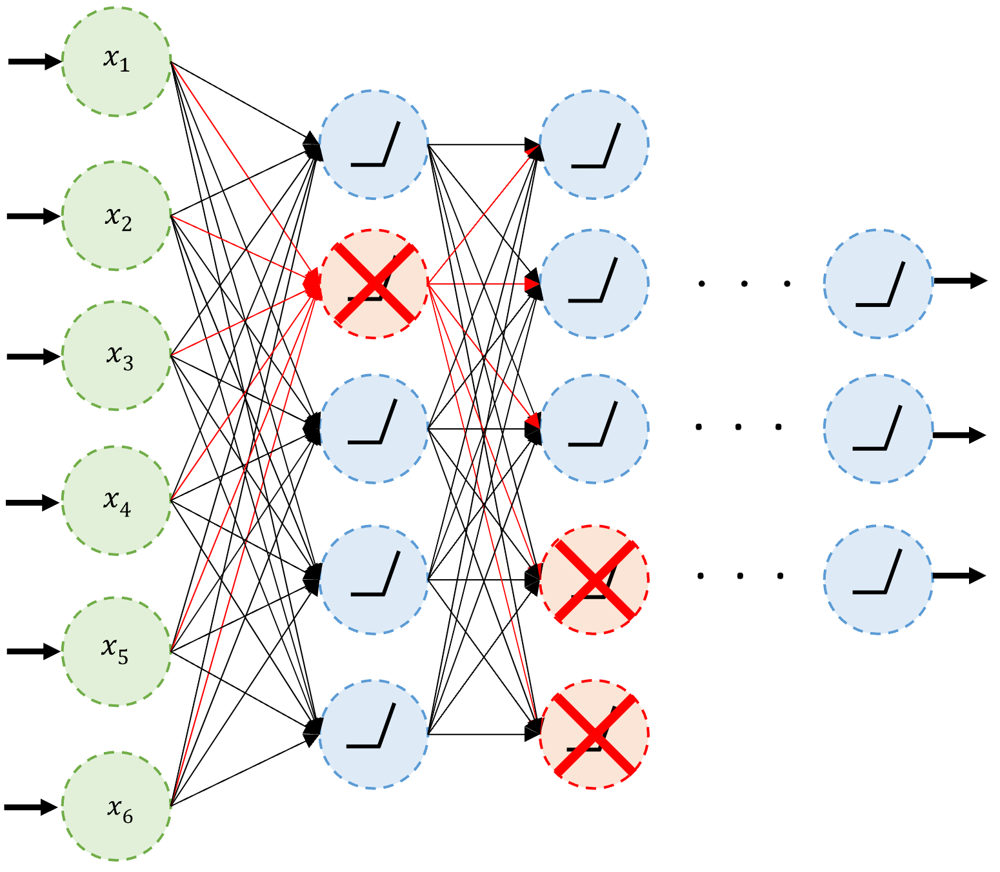
An example of neurons dropped during training.
Dropout quote #1
It’s surprising at first that this destructive technique works at all. Would a company perform better if its employees were told to toss a coin every morning to decide whether or not to go to work? Well, who knows; perhaps it would! The company would be forced to adapt its organization; it could not rely on any single person to work the coffee machine or perform any other critical tasks, so this expertise would have to be spread across several people. Employees would have to learn to cooperate with many of their coworkers, not just a handful of them.
Dropout quote #2
The company would become much more resilient. If one person quit, it wouldn’t make much of a difference. It’s unclear whether this idea would actually work for companies, but it certainly does for neural networks. Neurons trained with dropout cannot co-adapt with their neighboring neurons; they have to be as useful as possible on their own. They also cannot rely excessively on just a few input neurons; they must pay attention to each of their input neurons. They end up being less sensitive to slight changes in the inputs. In the end, you get a more robust network that generalizes better.
Code: Dropout
Dropout is just another layer in Keras.
The following code shows how we can apply a dropout to each hidden layer in the neural network. The dropout rate for each layer is 0.2. There is also an option called seed in the Dropout function, which can be used to ensure reproducibility.
Making predictions is the same as any other model:
model.predict(X_train_sc.head(3), verbose=0)
array([[1.45],
[0.69],
[1.57]], dtype=float32)
model.predict(X_train_sc.head(3), verbose=0)
array([[1.45],
[0.69],
[1.57]], dtype=float32)
Dropout has no impact on model predictions because Dropout function is carried out only during the training stage. Once the model finishes its training (once the weights and biases are computed), all neurons together contribute to the predictions (no dropping out during the prediction stage). Therefore, predictions from the model will not change across different runs.
By setting the training=True, we can let dropout happen during prediction stage as well. This will change predictions for the same output different. This is known as the Monte Carlo dropout and can be used to generate a distribution of predictions.
Dropout Limitation
Increased Training Time: Since dropout introduces noise into the training process, it can make the training process slower.
Sensitivity to Dropout Rates: the performance of dropout is highly dependent on the chosen dropout rate.
Ensembles
Ensembles
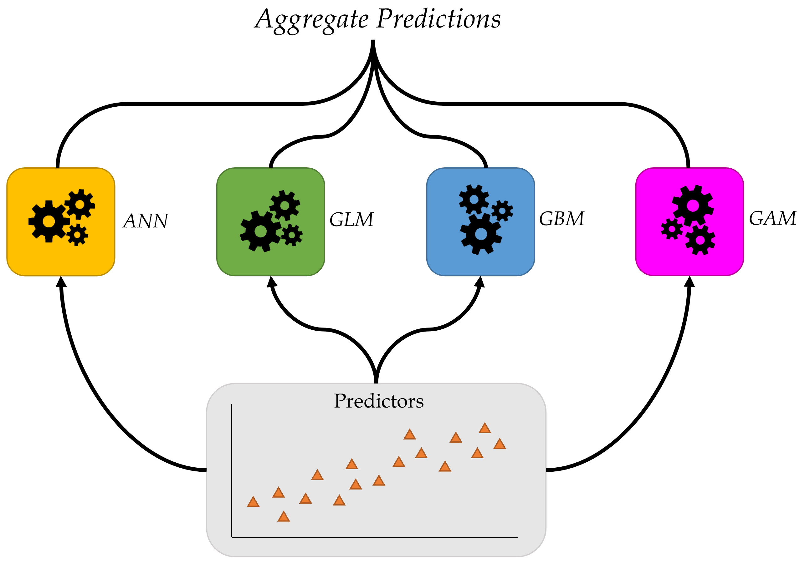
Combine many models to get better predictions.
Ensemble learning: combine predictions from multiple models.
Deep Ensembles
Train M neural networks with different random initial weights independently (even in parallel).
def build_model(seed):1 random.seed(seed) model = Sequential([ Dense(30, activation="leaky_relu"), Dense(1, activation="exponential") ]) model.compile("adam", "mse") es = EarlyStopping(restore_best_weights=True, patience=5) model.fit(X_train_sc, y_train, epochs=1_000,2 callbacks=[es], validation_data=(X_val_sc, y_val), verbose=False)return model
1
Set random seed which is used for a single NN
2
Specify, compile and fit the NN as usual
The following code fits 3 neural networks with different starting weights and biases.
M =3seeds =range(M)models = []for seed in seeds: models.append(build_model(seed))
Deep Ensembles II
Say the trained weights for the NNs are \boldsymbol{w}^{(1)}, \ldots, \boldsymbol{w}^{(M)}, then we get predictions \bigl\{ \hat{y}(\boldsymbol{x}; \boldsymbol{w}^{(m)}) \bigr\}_{m=1}^{M}
y_preds = []for model in models: y_preds.append(model.predict(X_test_sc, verbose=0))y_preds = np.array(y_preds)y_preds
Now that we have multiple predictions for each NN, we can obtain a distribution of the predictions. The distribution helps us to understand how uncertain our predictions are. Some architectures are more sensitive to the starting weights than others; this would be reflected in the prediction uncertainty.
Package Versions
from watermark import watermarkprint(watermark(python=True, packages="keras,matplotlib,numpy,pandas,seaborn,scipy,torch"))